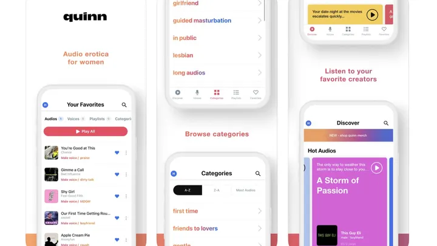
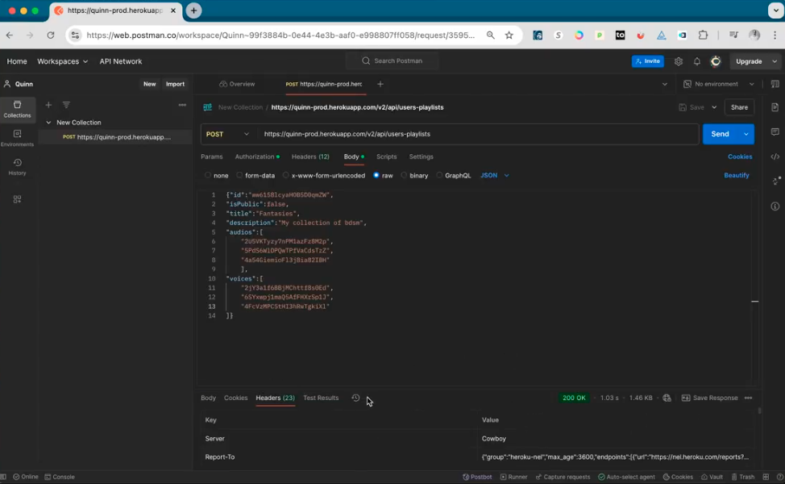
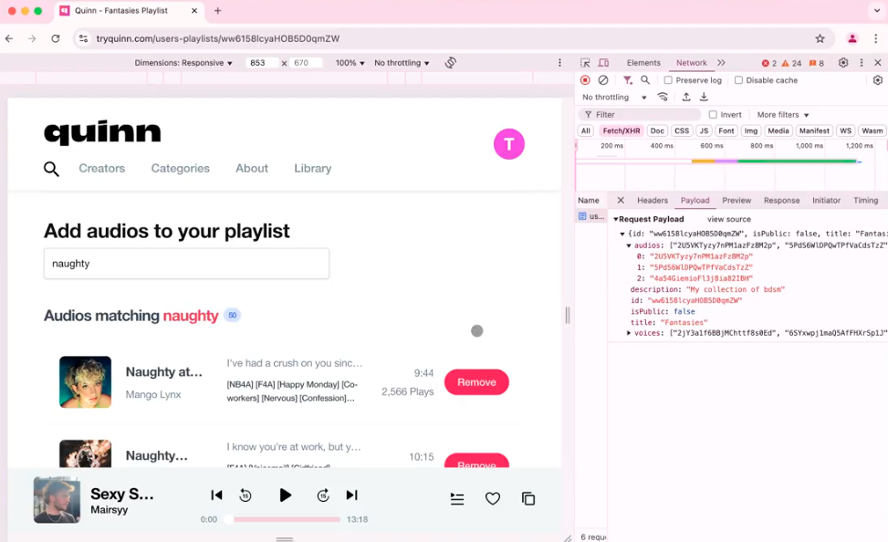
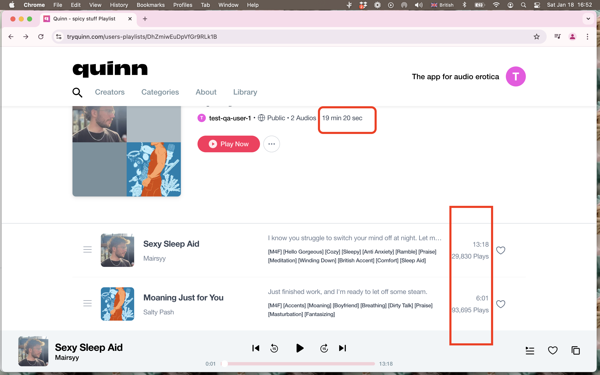

Quinn App — Playlist Functionality QA
January 2025 · Paid take-home · iOS & web (Chrome & Safari)
Overview
Quinn’s CEO reached out with a paid take-home QA assignment on Quinn, an audio storytelling platform. The scope was playlist functionality — creating playlists, adding and reordering stories, privacy settings, favorites, title/description boundaries, and behavior under different network speeds and offline mode. The work was also part of their hiring process.
I tested the same flows on iOS (physical device and simulator) and the web app in Chrome and Safari, then documented bugs with Loom recordings, screenshots, and a structured PDF report. I wasn’t offered the role, but it was valuable experience on a live product with real hiring stakes.
Scope & tools
Features exercised
Create playlists · add single/multiple stories (100+ stress-tested) · reorder & remove · public/private · favoriting · edit title & description · library counts · duration accuracy · offline sync.
Findings by platform
Web (Chrome & Safari)
- Core playlist flows worked; large playlists (100+ stories) performed well.
- Library overview story count stale until page reload.
- Account likes count stuck at zero when favoriting stories or playlists.
- Playlist descriptions not shown on web (visible on iOS).
- Whitespace-only titles accepted → nameless, unsearchable playlists.
- Total playlist duration consistently +1 second vs sum of stories.
- Offline adds showed in UI but did not sync after reconnect.
iOS app (v2.4.1)
- Creation, reorder, privacy toggles, and favoriting worked smoothly.
- Recent Activity list showed wrong story count until app restart.
- Whitespace-only titles accepted (same as web).
- Offline UI masked controls in gray — clearer than web.
- Descriptions displayed correctly on iOS.
- Playlist durations accurate (no +1s issue on iOS).
- Strong UX: add-to-playlist from three-dot menu anywhere in the app.
Network performance
Search and add-story timing under throttled conditions (Chrome DevTools):
API exploration with Postman
Captured playlist requests from the Chrome Network tab and replayed them in Postman to validate story additions and correlate UI actions with story IDs.


Workflow: filter DevTools for playlist traffic, copy a successful add story request, paste into Postman with the same auth headers, swap in a different story ID from the response body, and send. The playlist updated in the web UI without repeating the click path — confirming the API accepted the change independently of the front-end flow. Full request/response notes are in the bug report PDF.
Documented issues
Ten issues logged with severity, steps, expected vs actual, environment, and video or image evidence. Full write-up in the PDF.
-
Issue 1 Minor
Library overview playlist story count does not update until page reload after add/remove.
Loom recording -
Issue 2 Minor
After favoriting another user’s playlist, My Account playlist count is one less than Library.
Loom recording -
Issue 3 Minor
Account Overview likes count stays at zero when favoriting individual stories or full playlists.
Loom recording -
Issue 4 Major
Playlist descriptions save but do not display on web for owner or shared public link (iOS shows them).
Loom recording -
Issue 5 Major
Title field accepts spaces only → nameless playlist, hard to find in Library or search.
Loom recording -
Issue 6 Enhancement
Web: users must open a playlist to add stories — suggest add-to-playlist from browse/profile flows (iOS already supports this).
Loom recording -
Issue 7 Minor
Playlist header total duration is always one second longer than the sum of story durations (even for a single story).
-
Issue 8 Enhancement
Offline story add updates UI with no network warning; change is lost after reconnect and refresh.
Loom recording -
Issue 9 Minor iOS
Recent Activity shows stale story count after add; correct after force-close and reopen.
Steps: Open a playlist from Recent Activity, add one or more stories, return to Recent Activity. Expected: Row shows updated story count. Actual: Count stays at the pre-add value until the app is force-closed and reopened. Env: iOS 18, Quinn v2.4.1 (physical device). Documented with screenshots in the PDF — iOS screen recording was not hosted publicly.
-
Issue 10 Enhancement iOS
Suggest remove-story option on the three-dot menu next to each story, not only via Edit Playlist.
iOS already surfaces add to playlist from the three-dot menu on story cards across the app — a strong pattern. Removing a story still requires entering Edit Playlist and using the trash icon per row. Suggestion: mirror the add flow with Remove from playlist on the same menu to cut steps for curation. Compared against web, where add also requires opening the playlist first (Issue 6).
Evidence

Web recordings (Loom)
Takeaway
Core playlist features were solid on both platforms, with clear gaps in count sync, validation (whitespace titles), web description display, offline handling, and a persistent duration rounding bug on web. iOS led on discoverability (add from anywhere) and offline affordances. The assignment mirrored production QA under hiring pressure: exploratory sessions, cross-platform comparison, API corroboration, and evidence-backed reporting a team could act on.